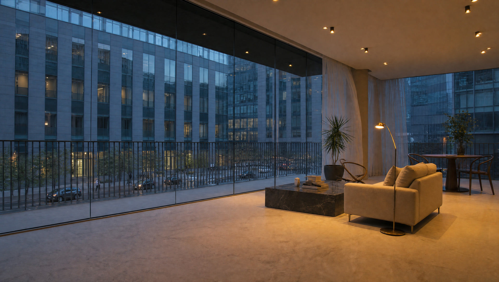
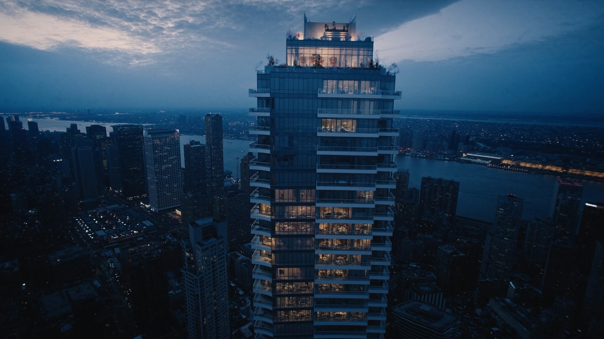
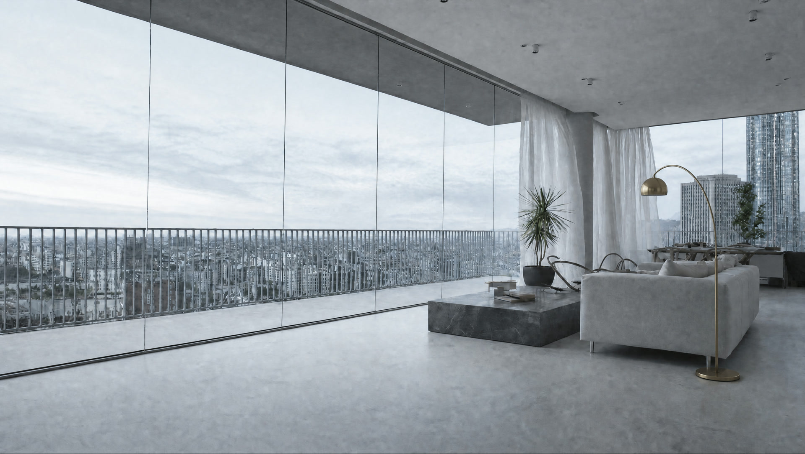
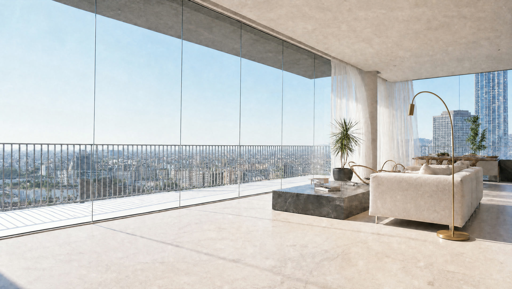
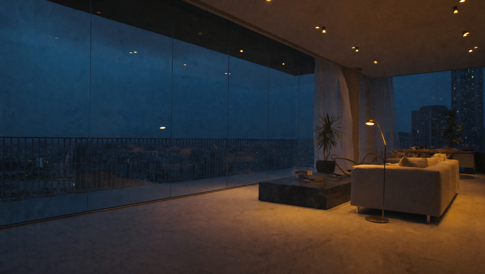
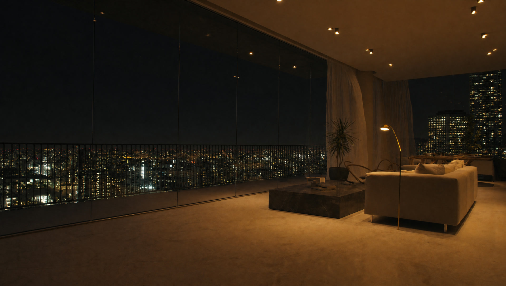
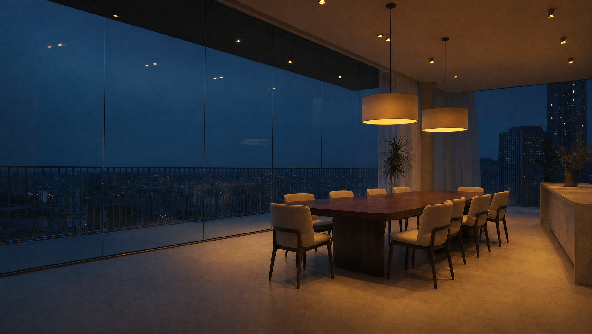
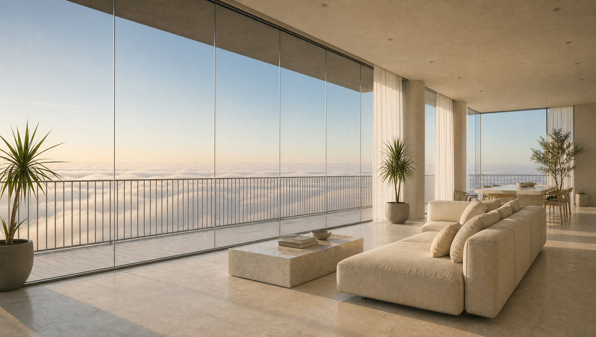
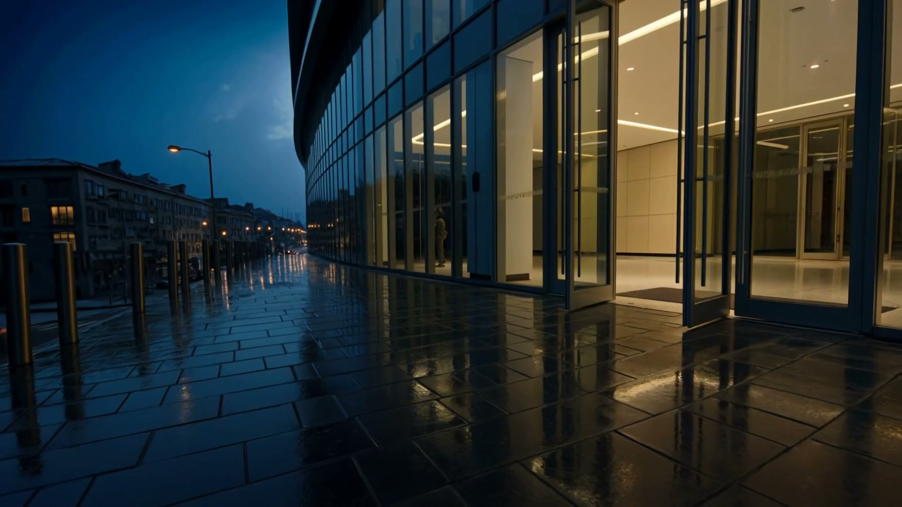

+52.00
The city is still a street below you. You hear it, faintly, and you can see people.
Kestrel House
Ground level
The doors are open from six in the morning. Tell us the height you are curious about and we will have that floor ready.

The crown is a sky lounge and an open terrace, and it belongs to every resident in the building. On a clear evening you can see weather arriving from forty miles out.
Buyers tell us the same thing after handover. The kitchen was darker than they imagined. So take the room through a full day and decide for yourself.




19:00 last lightThree heights are still open. Each one is a different relationship with the street below it.

The city is still a street below you. You hear it, faintly, and you can see people.

High enough that the street goes quiet. Low enough to still watch it.

Above the weather most mornings. The floor of the sky.
Covered arrival, valet from six in the morning, and a desk that is staffed every hour of the day. The lobby is the only room in the building that belongs to all of it.

Every buyer asks who the developer is, and they are right to. This is the answer in numbers rather than adjectives.
Kestrel House is a design study, so every image on this page was generated rather than photographed, and the footer says so plainly. On a real development the honest answer is to ask for photographs of the developer's last finished building, not renders of this one.
Ask for the delivery record and the penalty terms in writing before you pay a deposit. A developer who has finished on time will hand both over without being pushed.
No, and any development that shows you one view for the whole building is hiding something. Every height on this page is priced and photographed at that height.
Drag the dial at plus eighty eight and look. That is the whole reason it is on the page.
You can get close. Descend the building here, take the room through a day, then book the viewing to confirm what you already think.
Tell us the height you are curious about and we will have that floor open when you arrive.
We will confirm the hour by email and have the floor open.